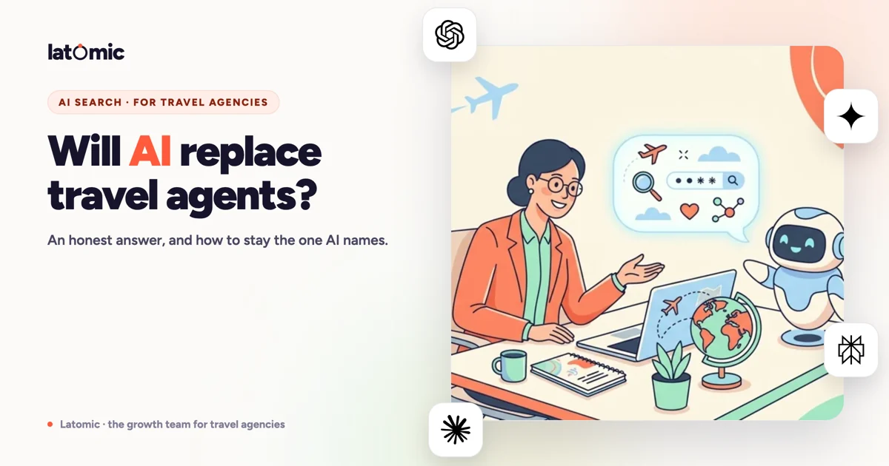

Will AI replace travel agents?
The honest answer is calmer than the headlines. AI is replacing the research step, the part where a traveler used to type questions into Google for an hour. It is not replacing the advisor who plans a complicated trip, fixes it when a flight falls apart, and takes responsibility when real money is on the line. The agencies that win from here are the ones that use AI and make sure it recommends them.

No, AI will not replace good travel agents, but it is already replacing the research step that used to bring travelers to you. People now ask ChatGPT and Gemini for ideas, rough plans and quick facts instead of searching for an hour. That changes where you get found, not whether you are needed. Complex trips, trouble on the road, and trust at the point of payment still send travelers to a human. The smart move is to use AI in your own back office and make sure the assistants recommend you when a traveler asks who to book with.
Want to be the agency AI recommends?
Latomic builds and tunes travel agency websites so ChatGPT, Gemini and Google can read, quote and recommend them, then reports what they say each month.
- A site AI assistants can read, quote and trust
- Your trips and facts in plain text, consistent listings, real reviews
- One team, everything included, $100 a month
- 1AI took the research step, not the advisor's job. Phocuswright found 56% of travelers used AI for at least one trip in the past year, with about a third using generative tools for research. (Phocuswright)
- 2This is already mainstream, not a forecast. Around 41% of US travelers used ChatGPT, AI Overviews or Perplexity to research a trip in the prior six months (Skift, early 2026).
- 3The behaviour is bigger than travel. BrightLocal found 45% of US consumers used AI for local recommendations, up from 6% a year earlier. (BrightLocal)
- 4AI is confidently wrong often enough that travelers still check the details with a person before they pay.
- 5Where a traveler does click through from AI, it clusters on one tool: ChatGPT is roughly 80% of AI-chatbot referrals. (Statcounter)
- 6Reviews decide a lot of what AI says. In a 2,880-prompt test, TripAdvisor appeared in 28.9% of ChatGPT's business answers. (Steady Demand)
- 7Being absent from AI answers now costs bookings. The fix is the same groundwork that wins Google, pointed at a new kind of reader.
The honest answer
Every few months a headline announces that AI has killed the travel agent. The owners who read it are the ones still working at 9pm rebooking a family whose connection was cancelled, so the headline lands oddly. The truth is less dramatic and more useful to plan around. AI has taken over one specific task that travelers used to do before they ever reached you: the open-ended research. The hour of typing "best time to visit Vietnam" and "do I need a visa for Kenya" into a search box has moved into a chat window. That hour was never the part you were paid for, but it was often how a traveler found you.
What AI actually replaced
What changed is the front door, not the house. A traveler planning a honeymoon used to Google their way to a shortlist of agencies and then email a few. Now many of them ask an assistant to plan the whole thing, and only reach out to a human when the plan gets complicated or the deposit is due. Phocuswright's 2025 work captured the shift plainly: a majority of travelers now use AI somewhere in their planning, with roughly a third reaching for generative tools like ChatGPT and Gemini specifically for trip research. That is the research step moving, not the advisor disappearing. On Google the same thing is happening to plain search, where an AI summary cuts how often people click the links.
The research step was always the cheap part
Think about where your value actually sits. It is not in knowing that Santorini has sunsets. It is in knowing which side of the island to stay for them in July, which operator will not cancel a small-group tour at the last minute, and what to do when a volcano grounds flights the week of departure. None of that is the research step. AI has absorbed the commodity knowledge and left the judgement, the relationships and the accountability firmly with you. The uncomfortable part is only that the commodity knowledge is how a lot of travelers used to stumble into your door.
Why "replace" is the wrong frame
Travel has lived through this before. Online booking engines were supposed to end agents two decades ago, and instead they cleared out the order-takers and left room for advisors who added something a form could not. AI is the same shape of change at a faster pace, and the pace is the new part: ChatGPT alone reached around 900 million weekly users by early 2026. The agencies at risk are the ones whose whole offer was looking things up. The agencies that gain are the ones who were always selling judgement, and who now make sure the assistant doing the lookup sends the traveler to them. That is why our guide to getting recommended by ChatGPT treats AI as a channel to win, not a threat to fear.
What AI is genuinely good at
To decide where a human still matters, you have to be fair about what the machine does well. Pretending AI is useless is as dangerous as pretending it does everything, and travelers can tell when you are in denial. Here is the honest version of what an assistant handles well enough that travelers will keep using it for exactly these jobs.
Inspiration and first ideas
If a traveler does not yet know where to go, AI is a strong brainstorming partner. "Somewhere warm in February, under four hours from London, not too touristy" gets a sensible, varied list in seconds. This is genuinely useful, and travelers have taken to it fast: BrightLocal found 45% of consumers used AI for local recommendations, up from 6% a year earlier. It is also where your agency can be present or absent, because the assistant is already naming operators and regions. If you are the agency it mentions for "small-group walking holidays in Portugal," the inspiration step becomes your lead. That visibility is what our guide to making your travel website visible to AI is built to win.
Rough itineraries and quick facts
AI is competent at a first-draft itinerary and at the small factual questions that used to fill a planning session: rough drive times, typical weather by month, what a region is known for, a plausible ten-day skeleton for Japan. It is fast, patient and available at midnight, which no agency is. Travelers love it for this, and they will keep loving it: Phocuswright puts generative-tool use for research at about a third of travelers. The thing to notice is that a rough draft is an invitation, not a finished trip, and the traveler often knows it.
What to happily hand to AI
The clearest way to think about it is a simple split: let AI do the broad, low-stakes, repeatable work, and keep the specific, high-stakes, judgement-heavy work for people. The table below is the version we give travel clients.
| Hand to AI | Why it works there | Keep with a human |
|---|---|---|
| First ideas and inspiration | Fast, broad, low stakes | Matching a trip to a real budget and taste |
| Rough itinerary skeletons | A draft to react to, not a plan to book | Pacing, logistics and realistic timing |
| Quick facts and weather | Commodity knowledge, widely published | On-the-ground, this-year specifics |
| Simple comparisons | Side-by-side summaries are easy to generate | Which operator actually delivers |
| Drafting a packing list | Harmless if slightly wrong | Visas, insurance and anything legal |
Where AI still falls short for travelers
The gaps are not small, and they cluster exactly where trips get expensive and emotional. A traveler who has used AI for a weekend city break will happily use a person for a three-week multi-country trip, because they have felt the difference. These are the gaps you can talk about honestly with clients without sounding defensive.
Complex, multi-part trips
A single city for a weekend is easy. A honeymoon that threads a safari, a beach and an internal flight with a tight connection, during a specific season, for a couple with a real budget and a fear of flying, is where a draft falls apart. The pieces interact. Change the safari dates and the beach leg no longer works; pick the cheap flight and the connection is too tight to risk with checked bags. AI produces something plausible, but plausible is not the same as bookable, and untangling the difference is advisory work. Travelers who have been burned by a tidy-looking plan that did not survive contact with reality learn to bring the complex trips to a person.
When something goes wrong
Trips break. A strike, a cancelled flight, an illness, a hotel that is nothing like its photos. In that moment the traveler does not want a chat window, they want someone who can call the airline, move the booking and tell them what to do next, tonight. This is the single strongest reason travelers keep an agent's number. AI can draft a complaint email; it cannot get you rebooked on the last seat out of a strike-bound airport, and it carries none of the responsibility if the trip collapses.
Accuracy and invented details
Assistants still state wrong things with full confidence. A hotel that closed, a visa rule that changed, a route that does not run in that season, a price that is years out of date. For a packing list this is harmless. For a booking it is money and ruined plans. Travelers have learned to double-check anything that matters, and checking is where a human earns trust. If an assistant is confidently wrong about your agency, that is a visibility problem you can fix, and it is the subject of why your agency isn't showing up in ChatGPT and the fixes in your ChatGPT Business Profile.
Why travelers still want a human
Beyond the practical gaps, there is a simpler reason agents are not going away: travel is a trust purchase made with real money, and trust still runs through people. You can see this in the way the same traveler who planned with AI picks up the phone before paying.
AI returns a clean, confident itinerary in seconds. The traveler reads it, likes it, and then does the telling thing: they search for a real agency to check it, book it and stand behind it before they spend thousands.
Trust at the point of payment
Handing over a deposit for a trip you have imagined for years is an act of trust. Travelers want to know there is a named person who will answer if it goes wrong, not a model that forgets the conversation. The closer a traveler gets to paying, the more they want a human on the other end. This is why the research can happen in a chat window while the booking still comes to you, and why being the agency the assistant names is worth so much, especially on ChatGPT, which carries about 80% of AI-chatbot referrals.
Judgement a model can't fake
Good agents hold knowledge that is not written down anywhere an assistant can read it: which lodge has gone downhill since new owners took over, which guide is worth the extra cost, which "sea view" is really a car park. That lived, current, specific judgement is the product. An assistant trained on last year's web cannot match this year's word from the ground, and travelers who care about getting it right know the difference.
Someone who is accountable
When a trip costs a month's salary, people want someone accountable for it. An agency has a name, a reputation and a reason to make it right. AI has none of these. That accountability is not a soft benefit, it is the core of why the booking, as opposed to the research, stays with a person. It is also why reviews weigh so heavily in what assistants recommend: in a 2,880-prompt test, ChatGPT's business answers leaned on review platforms far more than on Google. We return to that below and in ChatGPT versus Google Business Profile.
How AI is changing the job, not ending it
So the question is not really "will AI replace travel agents," it is "how does the job change." The answer is that the low-value hours shrink and the high-value hours grow, which for most good agencies is a better business, not a worse one.
Less time researching, more time advising
If AI handles the first draft and the quick facts, you spend less time looking things up and more time doing the part only you can do: tailoring, pacing, warning, reassuring and solving. That is more enjoyable work and more defensible work. The agent's day shifts from typing searches to applying judgement, and the trips that reach you are often the complex, higher-margin ones that AI sent along because it could not finish them.
AI in the back office
The sharpest agencies are already using AI themselves, quietly, where clients never see it. Drafting itinerary copy to edit rather than write from scratch, summarising a long supplier email, turning a planning call into a tidy proposal, answering routine questions so the team can focus on the hard ones. Used this way AI is a junior assistant that never tires, and it widens how many travelers one agent can serve well. The same tools that worry owners from the outside make them faster on the inside, and OpenAI is pushing them at businesses directly: its Business Hub targets roughly 1.2 billion weekly users.
What smart agencies are doing now
Fear is not a plan. The agencies that will still be here in five years are doing two practical things at once: using AI inside the business, and making sure AI recommends them outside it. Neither is a trick, and both are within reach of a small team.
Be the agency AI recommends
If travelers now ask an assistant who to book with, the goal is simple: be in the answer. That means a website the assistant can read, with your trips and facts in plain text, consistent business details everywhere, and genuine reviews. It is the same groundwork that wins Google, aimed at a reader that summarises instead of linking, and it is exactly what getting recommended by ChatGPT and making your site visible to AI walk through step by step. An agency that is invisible to assistants is slowly cut out of the research step that now starts most trips, and with 56% of travelers already using AI for a trip, that is a lot of trips.
Use AI, don't hide from it
The owners who thrive treat AI as a tool to pick up, not a tide to resist. They draft with it, summarise with it, and answer routine questions with it, then spend the saved hours on clients. They also claim their place in the assistants, so the facts the AI repeats about them are correct. Claiming matters because it lets you fix your details and read what travelers ask, which is covered in how to claim your agency in ChatGPT and in the Business Hub guide. As assistants start acting on travelers' behalf, the business agent for travel agencies is worth understanding early.
Fix your listings and reviews
Assistants lean hard on third-party proof, and in travel that proof is reviews and consistent listings. In an independent test of 2,880 prompts, Steady Demand found ChatGPT's business answers leaned on review platforms far more than on a direct pull from Google, with Yelp most common and TripAdvisor prominent for travel. In the same test, Yelp appeared in 95.8% of answers and TripAdvisor in 28.9%, while a direct pull from Google was rare. The practical takeaways are dull and powerful: keep your name, address and phone identical everywhere, and ask every happy traveler for a review while the trip is fresh. We go deeper on the listing side in ChatGPT versus Google Business Profile.
The numbers on AI travel adoption
It helps to see the scale, because it explains why this matters now rather than someday. The behaviour is already mainstream, and it is growing fast across both travel and local recommendations generally.
Adoption is already mainstream
Put the figures together and the picture is clear. Phocuswright found 56% of travelers used AI for at least one trip in the past year, with about 33% using generative tools for research. Skift reported that roughly 41% of US travelers used ChatGPT, AI Overviews or Perplexity to research a trip in the prior six months (Skift, early 2026). And the pattern is not limited to travel: BrightLocal found 45% of US consumers used AI for local recommendations, up from just 6% a year earlier. That is a habit forming in months, not decades.
Where the clicks and the influence go
The weekly reach behind this is large. ChatGPT passed around 900 million weekly users by early 2026, and OpenAI's Business Hub is aimed at roughly 1.2 billion weekly users, which is why a presence there matters for agencies. When travelers do click through from an assistant, the traffic concentrates: ChatGPT is about 80% of AI-chatbot referrals, so most of your AI visibility is won or lost in one place. And the influence runs wider than the clicks, because on Google an AI summary already reduces how often people click the links, with Pew finding the click rate roughly halving when a summary shows and 18% of searches showing one. So the answer itself is often the whole decision.
How to make AI work for your agency
The practical plan is short, and it is the opposite of panic. Treat AI as a channel and a tool, do the groundwork once, and check your results like you check your bookings.
Make your site readable
Assistants can only recommend an agency they can read. Let the AI search crawlers reach your pages, put your destinations, trip lengths, prices and contact details in plain page text rather than images, and write a page for each trip type a traveler might ask about. This is the same work that wins Google, so it does double duty, and it is laid out in full in making your travel website visible to AI. If you are doing none of this, it is the first afternoon's work with the biggest return.
Claim your profile and fix the facts
Claiming your place in the assistants lets you correct the details they repeat and see what travelers actually ask, so the AI answer about you is right rather than guessed. Start with how to claim your agency in ChatGPT, then keep your listings consistent everywhere, because a mismatched phone number or category is enough to hand the recommendation to a competitor whose details line up. The Business Hub is where a lot of this lives.
Check what AI says about you monthly
You cannot improve what you never look at. Once a month, ask ChatGPT, Gemini and Perplexity the questions your travelers ask, in their words, and note whether you were named, which competitors appeared, and any wrong facts. Run each prompt a few times, since answers shift by wording, city and sign-in. The table is the simple version we keep for clients.
| Ask the assistant | What to record |
|---|---|
| "Best travel agency for a honeymoon in [destination]" | Named? Position? Who else appeared? |
| "Who plans family tours to [region]?" | Sources cited, any wrong details about you |
| "Travel agent for a [budget] trip to [country]" | Whether the price framing matches yours |
| "Tour operator that offers [your specialty]" | Does your niche come through at all? |
Track the trend across months, not the result on any single day. If "family tours to Italy" keeps surfacing as a question and you are never named, that is your next page to write. This monthly loop is the heart of what we do for travel clients, and it feeds straight back into the readable site and the claimed profile above. If you would rather not run it yourself, that is the job Latomic does for $100 a month, everything included.
Frequently asked questions
Will ChatGPT replace travel agents?
No. ChatGPT has largely replaced the research step travelers used to do before contacting an agency, not the advisor who plans complex trips, fixes problems and stands behind a booking. The change moves where you get found, which is why being the agency it recommends matters. See how to get recommended by ChatGPT.
Can AI book a whole trip on its own?
It can draft a whole trip, and assistants are starting to act on travelers' behalf, but booking a complex trip still runs into real-world logistics, changing prices and the traveler's own need for a human at the point of payment. For now AI plans and compares, people confirm and book. The business agent guide covers where this is heading.
Should I be worried about AI as an agency owner?
Worried, no; alert, yes. The agencies at risk are the ones whose whole offer was looking things up. If you sell judgement and service, AI mostly removes your dull hours and sends you the harder trips. The real risk is being invisible to assistants, which why you're not showing up in ChatGPT helps you fix.
How do I stay relevant as a travel agent?
Use AI in your back office to work faster, and make sure assistants recommend you to travelers. That means a readable website, a claimed profile, consistent listings and genuine reviews. Start with making your site visible to AI and claiming your agency.
Is AI accurate enough for travelers to trust?
Not fully. Assistants still state wrong hotels, visa rules and prices with confidence, which is exactly why travelers check the details with a person before paying. If an assistant is wrong about your agency specifically, that is a visibility problem you can correct through your ChatGPT Business Profile.
Are travelers actually using AI to plan trips yet?
Yes, and widely. Phocuswright found 56% of travelers used AI for a trip in the past year (Phocuswright), Skift reported about 41% of US travelers used AI to research a trip recently, and BrightLocal found 45% used AI for local recommendations (BrightLocal). It is already mainstream behaviour.
Which AI assistant should my agency focus on first?
Start with ChatGPT, since it sends roughly 80% of AI-chatbot referrals (Statcounter), then Google's AI answers and Perplexity. The groundwork overlaps, so you mostly do the work once. Compare the channels in ChatGPT versus Google Business Profile.
More guides for travel agencies
- Phocuswright — Search slips, AI surges
- Skift — US travelers using AI for trip research, early 2026
- BrightLocal — Local Consumer Review Survey
- TechCrunch — ChatGPT reaches 900M weekly active users
- Unite.ai — OpenAI launches Business Hub and business agents
- Statcounter — AI chatbot market share
- Pew Research — AI summaries and link clicks
- Steady Demand — which sources ChatGPT cites for local businesses
Figures come from different samples and periods and are cited for direction, not precision. Verify current data against the sources above and each platform's own documentation. Latomic is not affiliated with OpenAI, Google, Perplexity or Meta.